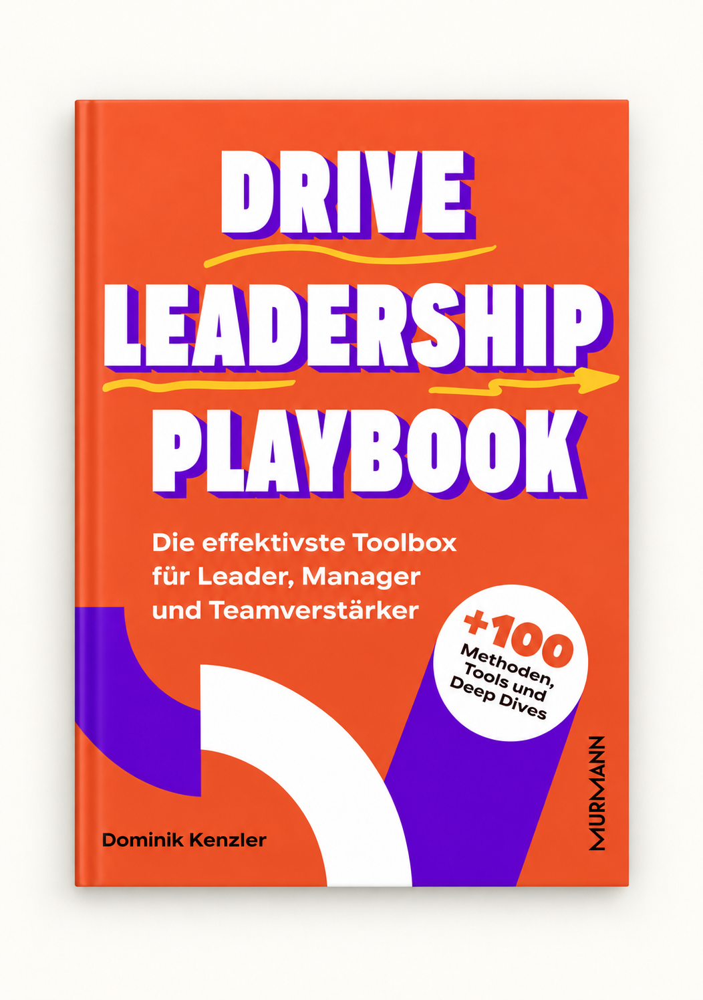
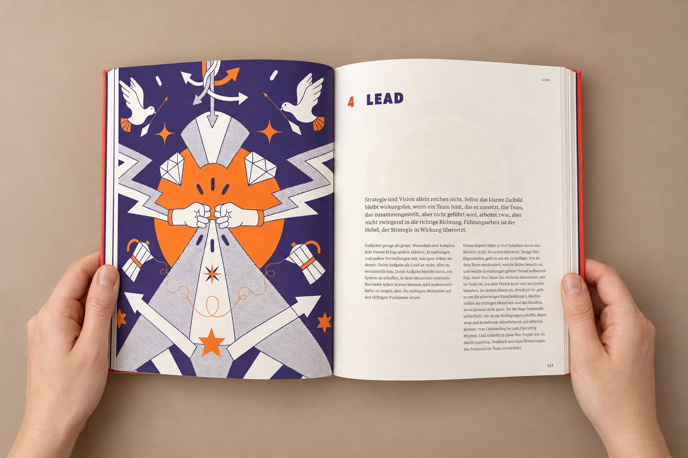
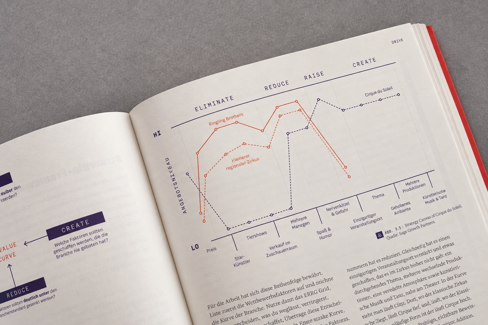

100+Methoden für deinen Führungsalltag
Erprobt in Start-ups und Scale-ups – durch Wachstum, Finanzierungsrunden und zwei Exits.

Über 100 erprobte Methoden für deinen Führungsalltag.
Mit KI-Skills, die dich bei der Anwendung unterstützen.
Vom Co-Autor des Bestsellers
Digital Innovation Playbook.
Aus Erfahrung. Für die Praxis.
Erprobt in Start-ups und Scale-ups – durch Wachstum, Finanzierungsrunden und zwei Exits.
Vom Mitautor des Digital Innovation Playbook.
Bewährtes Wissen zum Anwenden.
Das Leadership Flywheel
Richtung geben. Menschen führen. Umsetzung sichern. Dich selbst steuern.
Eine gemeinsame Richtung schaffen: vom Zielbild bis zu den Entscheidungen, die im Alltag Orientierung geben.
Ein Umfeld schaffen, in dem Menschen gemeinsam gute Arbeit leisten und sich weiterentwickeln können.
Aus einer gemeinsamen Richtung konkrete Ergebnisse machen. Klarheit schaffen, Entscheidungen treffen und ins Handeln kommen.
Deine Führung beginnt bei dir. Reflektiere, wie du arbeitest, entscheidest und deine Aufmerksamkeit einsetzt.
»Leadership lässt sich lernen. Als Handwerk, das viele Fähigkeiten benötigt. Jede kann man üben, verbessern und aufs Neue anwenden.«
Dominik Kenzler
Mitgründer von Dark Horse und Mitautor des Digital Innovation Playbook.
Über 25.000 verkaufte Exemplare des Digital Innovation Playbook in Deutschland.

Ein System für deinen Führungsalltag
Richtung geben, Menschen führen, Umsetzung sichern und dich selbst steuern.
Das Flywheel hilft dir, deine nächste Führungsaufgabe einzuordnen.
Richtung geben.
Strategie und Zielbild klären. Prioritäten so setzen, dass alle wissen, worauf es ankommt.
Menschen führen.
Teams aufbauen und entwickeln. Erwartungen klären, Feedback geben und Verantwortung stärken.
Umsetzung sichern.
Entscheidungen treffen, Arbeit priorisieren und aus gemeinsamen Zielen konkrete Ergebnisse machen.
Dich selbst steuern.
Die eigene Führungsarbeit reflektieren. Bewusst entscheiden, wo du deine Zeit und Energie einsetzt.
Zum Beispiel: Playing to Win, OGSM, Team Charter, 1:1, OKRs, Shape Up und Braintrust
Das Buch. Und dein Arbeitsalltag.
Die Methode verstehen.
Mit KI daran weiterarbeiten.
Zum Buch entsteht ein digitaler Companion mit KI-Skills und anpassbaren Vorlagen. Er soll dir helfen, die Methoden auf deine eigene Führungssituation zu übertragen.
Eine Strategie fehlt, Prioritäten sind unklar oder ein wichtiges Gespräch steht an. Du startest bei dem, was dich gerade beschäftigt.
Das Buch erklärt das Vorgehen. Du entscheidest, welches Werkzeug zu deiner Situation und deinem Team passt.
Die ergänzenden Skills und Vorlagen sollen dich bei der Vorbereitung und Ausarbeitung unterstützen. Dein Urteil bleibt entscheidend.

Drive Leadership Playbook
Über 100 Werkzeuge und Methoden zum Nachschlagen und Anwenden.
Von Dominik Kenzler. Bei Murmann. Veröffentlichung: 24. September 2026.
Bei deinem Buchhändler ansehen: